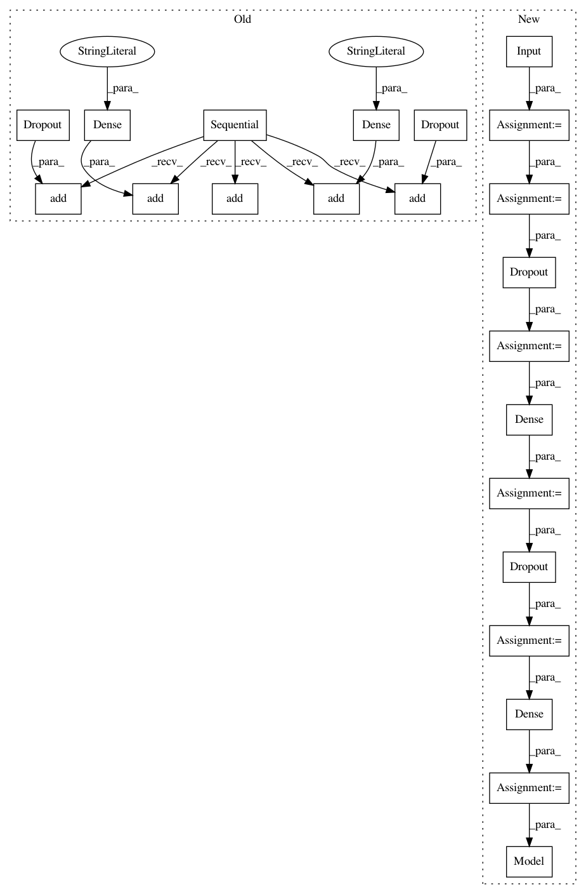

b80fb3bdcfeac64d91b7365be1196392e013dcb8,autokeras/generator.py,DefaultClassifierGenerator,generate,#DefaultClassifierGenerator#,49
Before Change
def generate(self):
return one Sequential model that has been compiled
model = Sequential()
pool = self._get_pool_layer_func()
conv = get_conv_layer_func(len(self._get_shape(3)))
model.add(conv(32, kernel_size=self._get_shape(3),
activation="relu",
padding="same",
input_shape=self.input_shape))
model.add(conv(64, self._get_shape(3),
padding="same",
activation="relu"))
model.add(pool(pool_size=self._get_shape(2)))
model.add(Dropout(0.25))
model.add(Flatten())
model.add(Dense(128, activation="relu"))
model.add(Dropout(0.5))
model.add(Dense(self.n_classes, activation="softmax"))
model.compile(loss=categorical_crossentropy,
optimizer=Adadelta(),
metrics=["accuracy"])
After Change
pool = self._get_pool_layer_func()
conv = get_conv_layer_func(len(self._get_shape(3)))
input_tensor = Input(shape=self.input_shape)
output_tensor = conv(32, kernel_size=self._get_shape(3),
padding="same")(input_tensor)
output_tensor = BatchNormalization()(output_tensor)
output_tensor = Activation("relu")(output_tensor)
output_tensor = conv(64, self._get_shape(3),
padding="same")(output_tensor)
output_tensor = BatchNormalization()(output_tensor)
output_tensor = Activation("relu")(output_tensor)
output_tensor = pool(pool_size=self._get_shape(2), padding="same")(output_tensor)
output_tensor = Dropout(0.25)(output_tensor)
output_tensor = Flatten()(output_tensor)
output_tensor = Dense(128, activation="relu")(output_tensor)
output_tensor = Dropout(0.5)(output_tensor)
output_tensor = Dense(self.n_classes, activation="softmax")(output_tensor)
model = Model(input_tensor, output_tensor)
model.compile(loss=categorical_crossentropy,
optimizer=Adadelta(),
metrics=["accuracy"])
return model
In pattern: SUPERPATTERN
Frequency: 3
Non-data size: 22
Instances
Project Name: keras-team/autokeras
Commit Name: b80fb3bdcfeac64d91b7365be1196392e013dcb8
Time: 2018-01-05
Author: jhfjhfj1@gmail.com
File Name: autokeras/generator.py
Class Name: DefaultClassifierGenerator
Method Name: generate
Project Name: keras-team/keras
Commit Name: c3b512fa98f0c560ec59a73858057bc4decab75e
Time: 2017-10-11
Author: ozabluda@gmail.com
File Name: examples/mnist_siamese.py
Class Name:
Method Name: create_base_network
Project Name: keras-team/autokeras
Commit Name: b80fb3bdcfeac64d91b7365be1196392e013dcb8
Time: 2018-01-05
Author: jhfjhfj1@gmail.com
File Name: autokeras/generator.py
Class Name: RandomConvClassifierGenerator
Method Name: generate